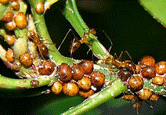
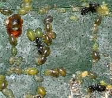

| Home |
| PEST OF TEA |
mAJOR pESTS |
| 1. Tea mosquito bug |
| 2. Mites |
| - Red spider mite |
| - Scarlet mite |
| - Purple mite |
| - Pink mite or orange mite |
| - Yellow mite |
| 3. Shot hole borer |
| 4. Sapling borer |
mINOR pESTS |
| 1. Flushworm |
| 2. Tea tortrix |
| 3. Tea leaf roller |
| 4. Scales |
| 5. Thrips |
| 6. Tea jassid |
| 7. Aphid |
| Questions |
| Download Notes |
TEA :: MAJOR PEST :: SCALES
8.Scales: Saissetia coffeae (Coccidae: Hemiptera)
Damage symptoms : Vegetatively propagated clones are susceptible. Presence of hemispherical brown scale along the midrib and tender stem. Sooty mould found on lower leaves.
|  |
Bionomics: Nymphs are white. Adult male is winged. Female is sedentary
|  |
Management
Spray any of the following insecticides viz., carbaryl 1 kg or endosulfan 35 EC or quinalphos 25 EC or chlorpyriphos 20 EC 1000 ml/ha or ethion 50 EC 500 ml or profenofos 50 EC 800-1000 ml with 500 L water/ha